Antes de empezar
Qué es el sistema, qué necesita y qué puede hacer cada quien.
El Sistema Integrado de Permisos, Vacaciones y Control de Garita reemplaza los formularios en papel y las hojas de cálculo con las que se llevaban las vacaciones. Cada solicitud queda registrada con un número, pasa por su jefe inmediato y por Talento Humano, y usted ve en todo momento en qué va y cuántos días le quedan.
Qué necesita
- Su cédula y un correo registrado en Talento Humano. No hay contraseñas: cada vez que entra, le llega un código al correo.
- Un celular o una computadora con navegador (Chrome, Edge, Firefox o Safari). No se instala nada.
- Estar conectado a la red de la empresa o tener la dirección del sistema que le dé Talento Humano.
Qué puede hacer cada perfil
| Perfil | Lo principal |
|---|---|
| Colaborador | Ver su saldo y de dónde sale, pedir vacaciones y permisos, seguir sus solicitudes, mostrar su código de salida, mantener al día sus datos de contacto. |
| Jefe inmediato | Todo lo anterior, más autorizar o rechazar las solicitudes de su equipo, elegir quién cubre el puesto y ver el calendario y los saldos de su gente. |
| Talento Humano | Atender los pendientes de su sede, dar la autorización final, imprimir y archivar los documentos firmados, mantener las fichas, informes y exportaciones, cargos y áreas y cargas masivas. |
| Garita | Validar el código de salida y el regreso, registrar visitas y la jornada del personal temporal. |
| Administrador | Todo lo de Talento Humano, más la configuración del sistema: usuarios, sedes, tipos de permiso, feriados, parámetros y actualizaciones. |
El menú de la izquierda (en el celular, el botón ☰ arriba) muestra solo lo que corresponde a su perfil.
Entrar al sistema
Con su cédula y un código que le llega al correo. Sin contraseñas que olvidar.
- Abra la dirección del sistema y escriba su cédula de identidad (10 dígitos). Pulse «Enviar código a mi correo».
- Revise su correo: le llega un código de 6 dígitos. La pantalla le muestra a qué correo se envió (con parte de la dirección oculta).
- Escriba el código y pulse «Ingresar». El código vale 10 minutos y una sola vez.
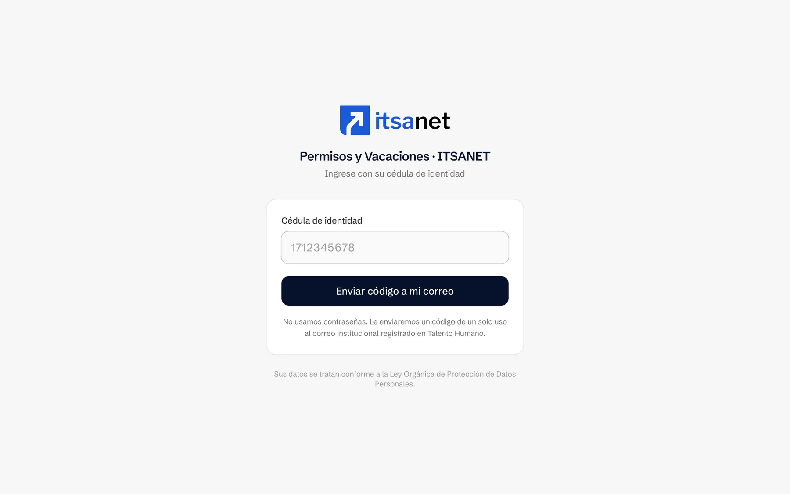
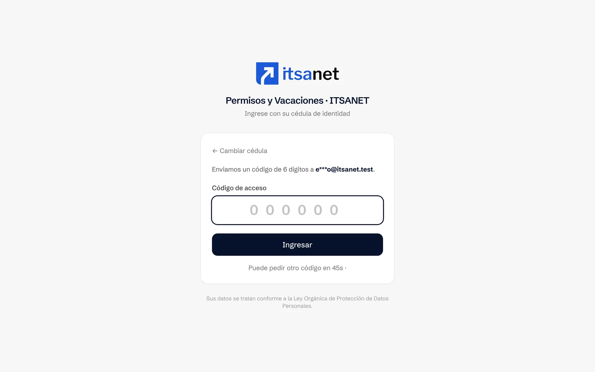
Una sesión a la vez
Por seguridad, su cuenta queda abierta en un solo dispositivo. Si entra desde otro, la sesión anterior se cierra y le llega un correo avisándole. Si no fue usted, avise de inmediato a Talento Humano.
La primera vez que entra
Si a su ficha le falta algún dato, el sistema se lo pide una sola vez.
La primera vez puede aparecer la pantalla «Bienvenido» con lo que falte en su ficha. Lo que pide depende de lo que Talento Humano tenga registrado. Por ejemplo:
- Su área y su cargo, si no constan: los elige de la lista oficial. Si el suyo no aparece, elija «No está en la lista…» y escríbalo; Talento Humano lo revisa antes de que rija.
- Su fecha de nacimiento, su teléfono, su jefe inmediato o su fecha de ingreso, para confirmarlos.
- Un contacto de emergencia.
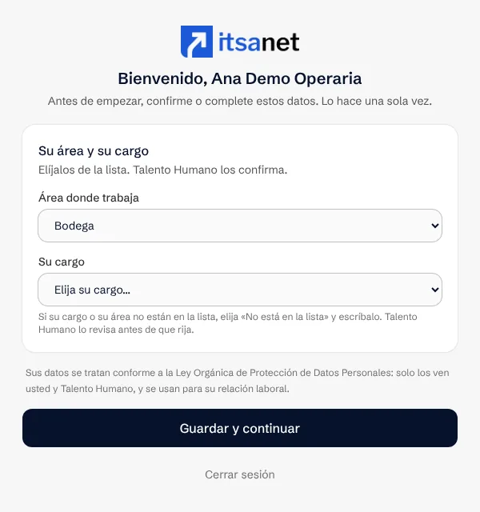
Mi panel
Su saldo, sus solicitudes y sus documentos, en una sola pantalla.
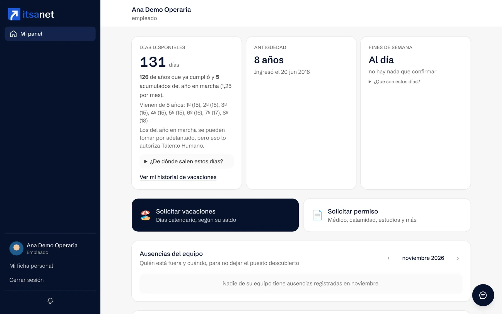
- Días disponibles: su saldo de vacaciones. Abra «¿De dónde salen estos días?» para ver el detalle por año de servicio: cuánto le corresponde cada año y cuánto ha gozado.
- Antigüedad: los años cumplidos desde su fecha de ingreso. Desde el sexto año se suma un día de vacaciones por cada año adicional (Código del Trabajo, Art. 69).
- Fines de semana: cuántos fines de semana completos le faltan dentro de sus vacaciones del período (ver cómo se cuentan los días).
- Solicitar vacaciones y Solicitar permiso: los dos botones para empezar un trámite.
- Ausencias del equipo: quién de su equipo estará fuera y cuándo, para coordinar.
- Documentos para firmar, Mis solicitudes y su historial de vacaciones, más abajo.
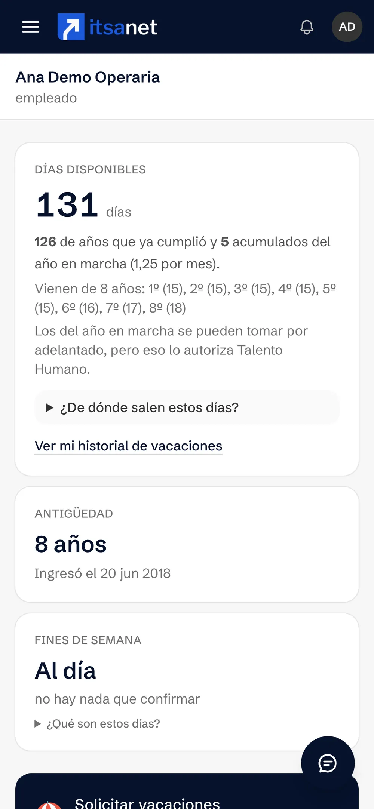
Pedir vacaciones
Elija las fechas: el sistema le dice cuántos días descuenta y cuánto le queda antes de enviar.
- En Mi panel, pulse «Solicitar vacaciones».
- Elija la fecha desde y la fecha hasta. Debajo verá los días a descontar, con cuánto le quedaría y cuántos fines de semana incluye.
- Escriba una descripción breve (por ejemplo, «Vacaciones con la familia»).
- Pulse «Enviar solicitud». Recibirá un correo con el número de su solicitud.
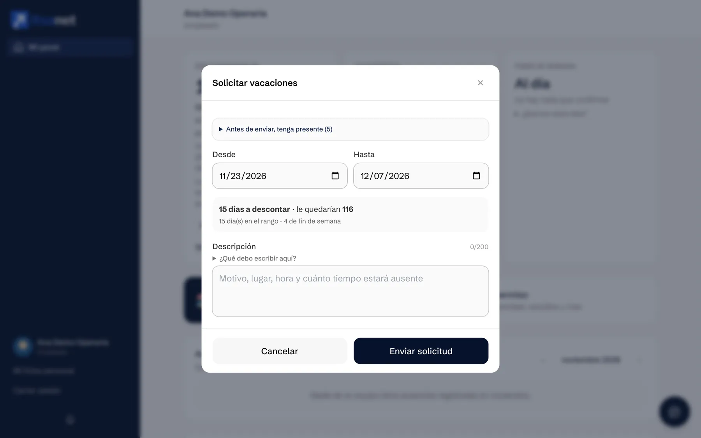
Reglas que conviene saber
- Anticipación: las vacaciones se piden con al menos 10 días de anticipación, para que su jefe pueda organizar quién cubre el puesto.
- Bloques: se recomienda tomarlas en bloques de 15 días; el mínimo es de 7. Para un bloque más corto, el formulario le pide explicar el motivo, y lo autoriza quien corresponda.
- Días calendario: se cuentan todos los días entre la fecha de inicio y la de fin, incluidos sábados, domingos y feriados.
- Dos fines de semana por período: dentro de las vacaciones de cada período deben caer al menos dos fines de semana completos. Si sus fechas dejan uno fuera, el sistema se lo dice y le propone las fechas corregidas.
- Sin cruces: no puede pedir días que ya están en otra solicitud suya pendiente o aprobada.
Pedir un permiso
Cita médica, calamidad doméstica, trámites y más. Algunos piden un respaldo.
- En Mi panel, pulse «Solicitar permiso».
- Elija de qué se trata (por ejemplo, «Cita médica» o «Calamidad doméstica»).
- Indique las fechas y, si es por horas, la hora de inicio y de fin.
- Escriba la descripción: motivo, lugar, hora y cuánto tiempo estará ausente. Su jefe y Talento Humano deciden con lo que usted escriba y adjunte.
- Si el tipo de permiso lo exige, adjunte el respaldo (certificado, cita o citación): foto o PDF.
- Pulse «Enviar solicitud».
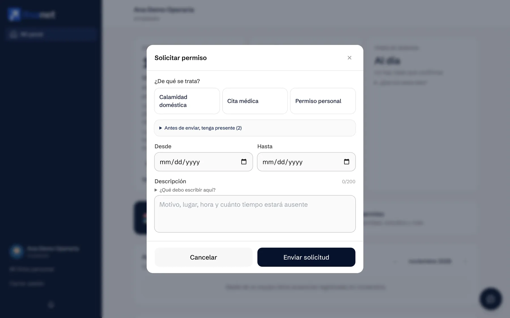
Los permisos se pueden pedir el mismo día: una cita o una calamidad no avisan con anticipación. Se cuentan en días hábiles.
Seguir, cancelar o anular una solicitud
Cada solicitud muestra en qué etapa está. Le llega un correo en cada paso.
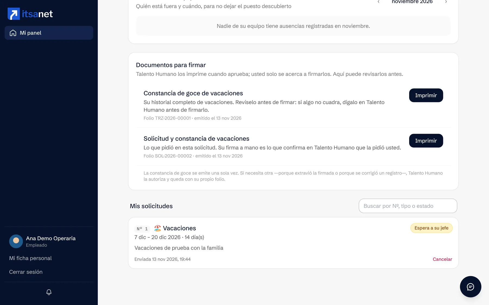
- Mientras no está aprobada, puede cancelarla desde «Mis solicitudes».
- Si ya está aprobada y no la va a usar, pulse «Pedir anulación» y explique por qué. Talento Humano la revisa; si la autoriza, se le devuelven los días y el código de salida deja de servir.
- Si la rechazan, verá el motivo del rechazo en la solicitud y en el correo.
Los estados posibles están en la tabla de estados.
Su código de salida (QR)
Para salir de la empresa con un permiso aprobado.
- Cuando su permiso queda aprobado, le llega un código QR por correo. También lo encuentra en Mi panel, en la solicitud aprobada («Su código de salida»).
- Al salir, muéstrelo en garita. El guardia lo escanea: queda registrada su salida.
- Al regresar, muéstrelo de nuevo: queda registrado su regreso, y si se pasó de la hora.
Documentos para firmar
Las vacaciones aprobadas terminan con su firma a mano en Talento Humano.
- Cuando su jefe aprueba, aparece en Mi panel › Documentos para firmar lo que tendrá que firmar: la Solicitud y constancia de vacaciones y, cuando corresponde, la Constancia de goce de vacaciones (su historial completo). Puede revisarlos e imprimirlos antes.
- Talento Humano los imprime; usted solo se acerca a firmarlos.
- Talento Humano archiva el físico y sube el escaneo el mismo día. Con eso su trámite queda como «Registro concluido».
Mi ficha
Sus datos de contacto los corrige usted. Su expediente laboral, Talento Humano.
Abra Mi ficha personal desde el menú (abajo a la izquierda, junto a su nombre).
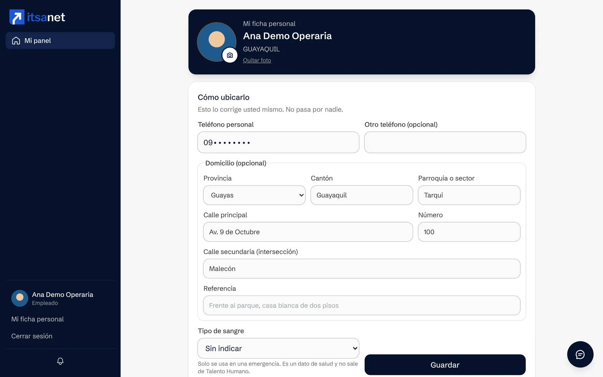
Lo que usted corrige directamente
- Teléfono personal y otro teléfono.
- Domicilio por partes: provincia, cantón, parroquia, calle principal, número, calle secundaria y una referencia. Es opcional.
- Más teléfonos (opcional): hasta cinco números adicionales, con su tipo (celular, fijo, trabajo) y una nota, por ejemplo «WhatsApp».
- Contactos de emergencia: a quién avisar si algo ocurre en la jornada. Puede tener varios y marcar el principal.
- Tipo de sangre, solo para una emergencia.
- Su foto de perfil.
- Su correo de acceso: escriba el nuevo y pulse «Enviar enlace». Rige cuando abra el enlace que llega a la dirección nueva.
Lo que pasa por Talento Humano
- Discapacidad: es un dato sensible y opcional. Lo envía a Talento Humano, que lo verifica.
- Su expediente (cédula, fecha de ingreso, contrato, cargo, área, jefe, sede): lo ve, pero no lo cambia. Junto a cada dato se indica si «No se modifica desde aquí» o «Lo confirma Talento Humano».
- Cambios que pidió: lo que envió a revisar y en qué estado está.
Mis dispositivos
Al final de su ficha ve dónde está abierta su cuenta y desde dónde entró. Si no reconoce alguno, ciérrelo y avise a Talento Humano.
Asistente y chat con Talento Humano
El botón redondo abajo a la derecha, en cualquier pantalla.
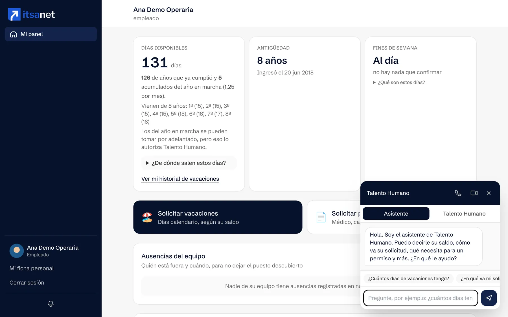
- Asistente: responde lo frecuente con sus propios datos: «¿Cuántos días tengo?», «¿En qué va mi solicitud?», «Permiso médico», «¿Qué debo firmar?», «Próximos feriados». No es inteligencia artificial: no envía sus datos fuera de la empresa y no inventa respuestas.
- Talento Humano: si el asistente no sabe, le ofrece escribirle a Talento Humano de su sede. Le responden en el mismo chat y le avisan por correo.
Autorizar las solicitudes de su equipo
Usted decide primero; después pasa a Talento Humano.
Cuando alguien de su equipo pide vacaciones o un permiso, le llega un correo y aparece un contador en Jefe › Por autorizar.
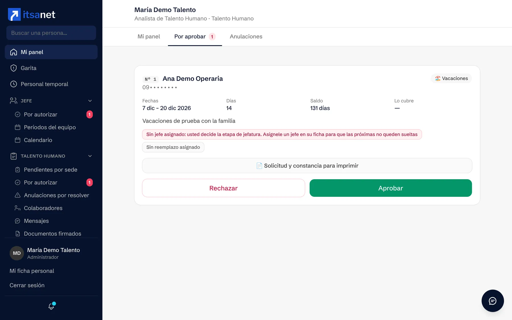
- Revise las fechas, los días y el saldo. Si el permiso tiene respaldo, puede abrirlo.
- ¿Quién cubre el puesto? Elija a la persona que lo reemplazará, o déjelo sin asignar y decídalo después. Talento Humano lo confirma para el registro.
- Pulse «Aprobar», o «Rechazar» escribiendo el motivo: la persona lo verá.
El correo que le llega también trae un enlace para revisar la solicitud y decidir desde ahí.
Calendario y períodos del equipo
Quién falta y cuándo, y cuántos días tiene acumulados cada uno.
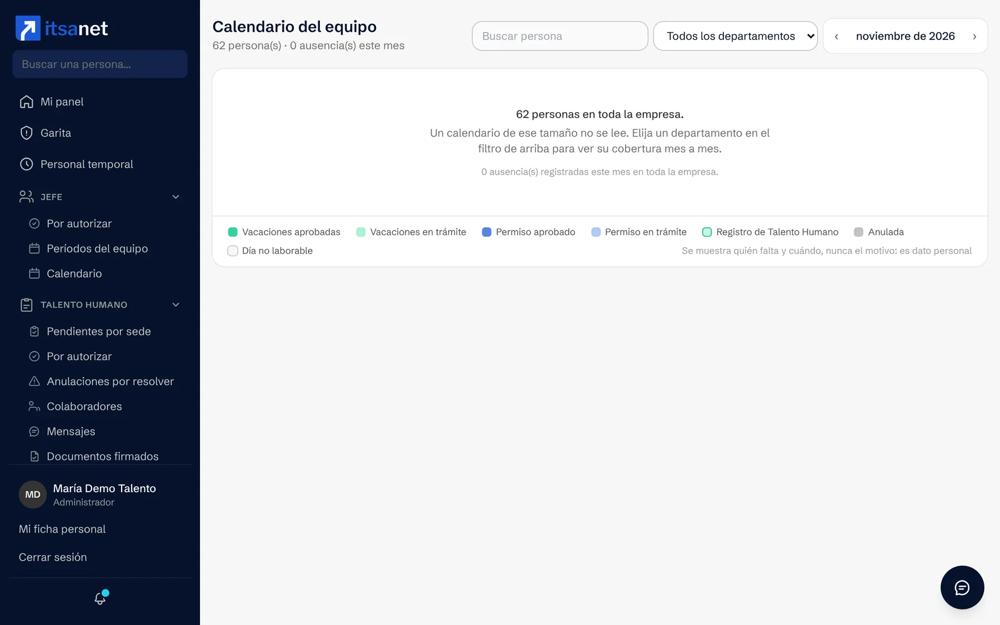
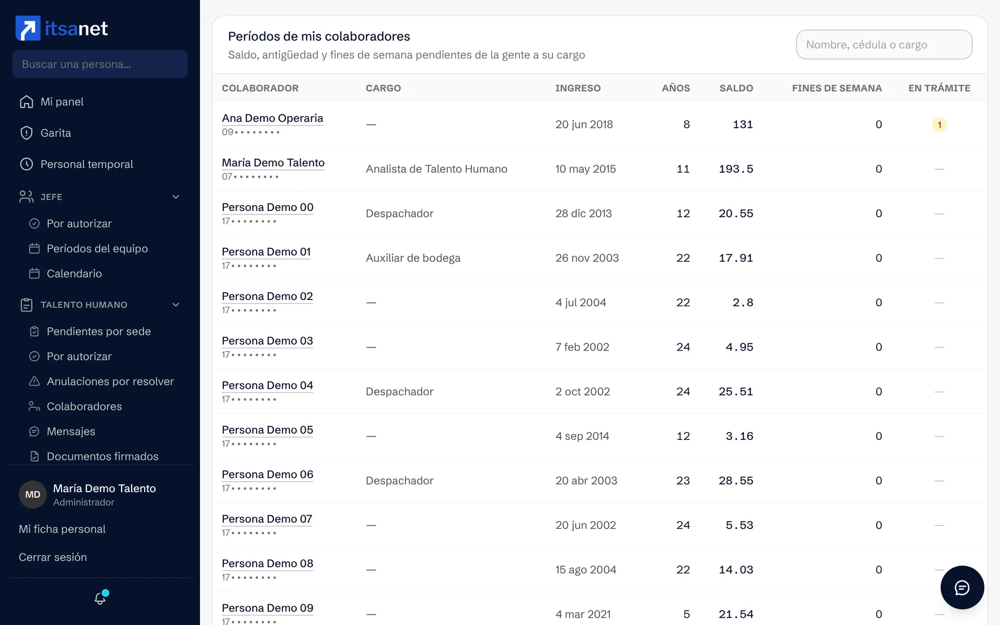
Úselos para planificar: quien acumula muchos días debería tomarlos antes de que se le junten períodos. En Informes › Solicitudes y Por departamento tiene los listados con filtros.
Pendientes por sede
Todo lo que espera a Talento Humano en su sede, en una bandeja.
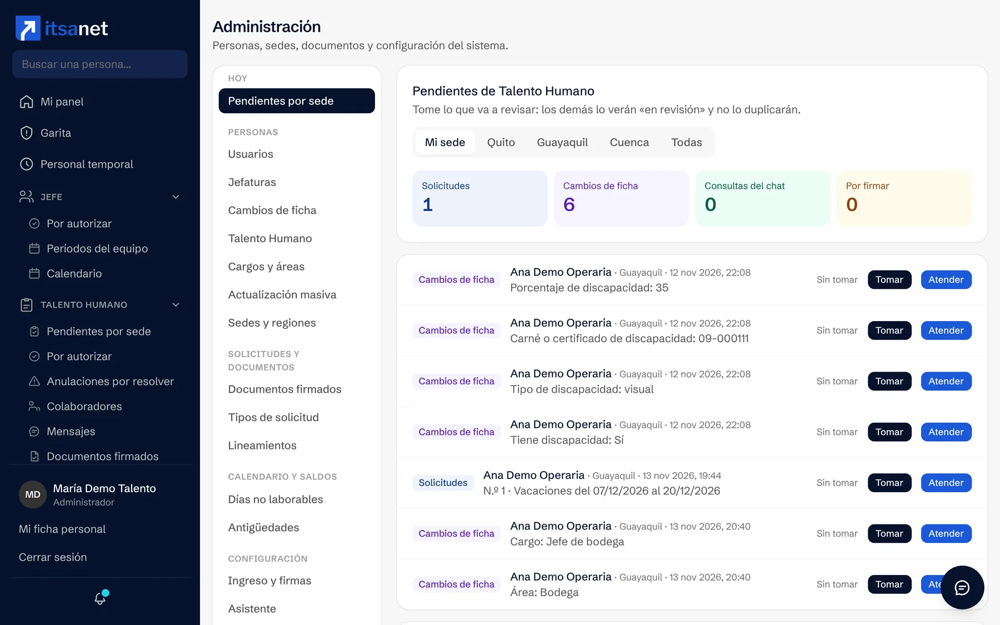
- Elija su sede (o «Todas») arriba. Los contadores dicen cuánto hay de cada cosa.
- Pulse «Tomar» en lo que va a revisar: sus compañeros lo verán «en revisión» y no lo duplicarán.
- Pulse «Atender» para resolverlo. Lo resuelto pasa a «Atendido hoy».
Autorizar, cambios de ficha y anulaciones
- Talento Humano › Por autorizar: las solicitudes que ya aprobó el jefe esperan su autorización final. Al aprobar, la persona recibe el correo (y el código de salida si es un permiso).
- Anulaciones por resolver: cuando alguien pide anular una solicitud aprobada. Si la autoriza, se devuelven los días y el código de salida deja de servir; si no, escriba el motivo.
- Cambios de ficha (en Administración): lo que los colaboradores pidieron cambiar en su expediente. «Confirmar» lo aplica; «Rechazar» lo deja como estaba.
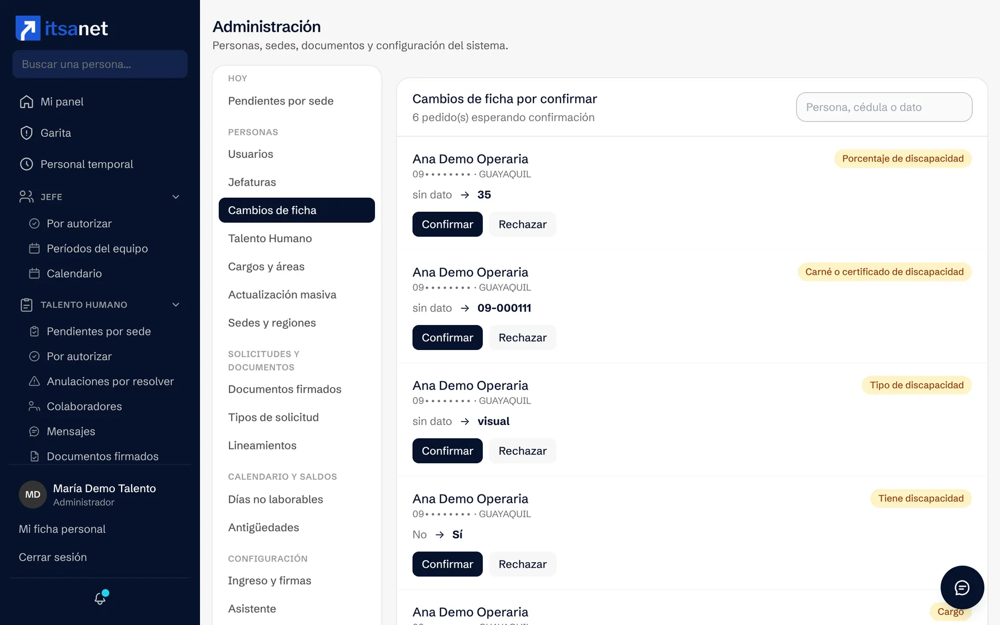
Documentos firmados
Imprimir, recoger la firma y archivar el escaneo el mismo día.
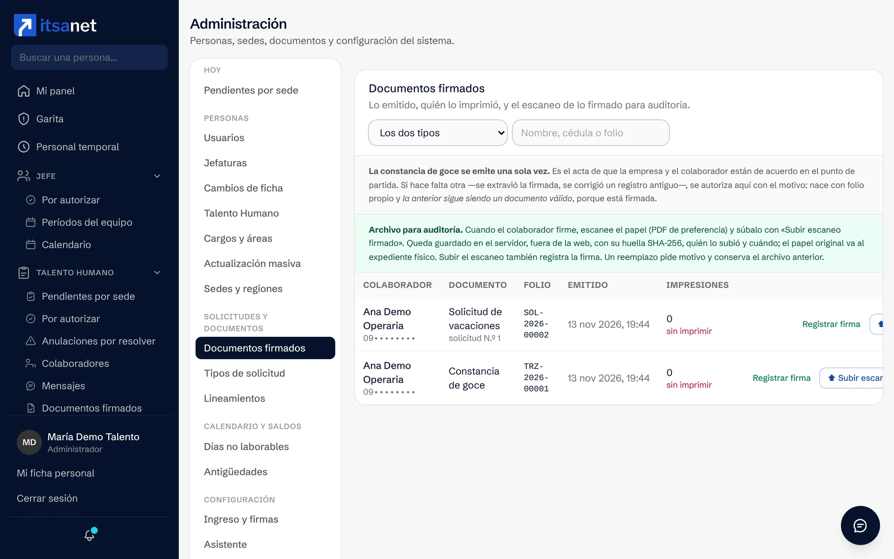
- Imprima el documento. El sistema pregunta la fecha: por defecto hoy. Puede consignar una fecha anterior con justificación, hasta 3 veces por documento; queda en la bitácora y el pie del documento dice la fecha real de impresión.
- La persona firma a mano. Pulse «Registrar firma».
- Escanee el documento firmado y pulse «Subir escaneo». El sistema guarda su huella digital para auditoría. Con eso el trámite queda concluido.
Colaboradores, fichas y mensajes
- Colaboradores: el listado con saldo, antigüedad, fines de semana pendientes y días en trámite de toda la planilla. El buscador de arriba a la izquierda («Buscar una persona…») lleva directo a una ficha.
- Ficha de la persona: datos personales y laborales, domicilio, teléfonos, contactos de emergencia, saldo y solicitudes. Solo Talento Humano ve los datos de contacto; el jefe no.
- Mensajes: las consultas que llegan por el chat. Responda desde ahí; la persona recibe el aviso por correo.
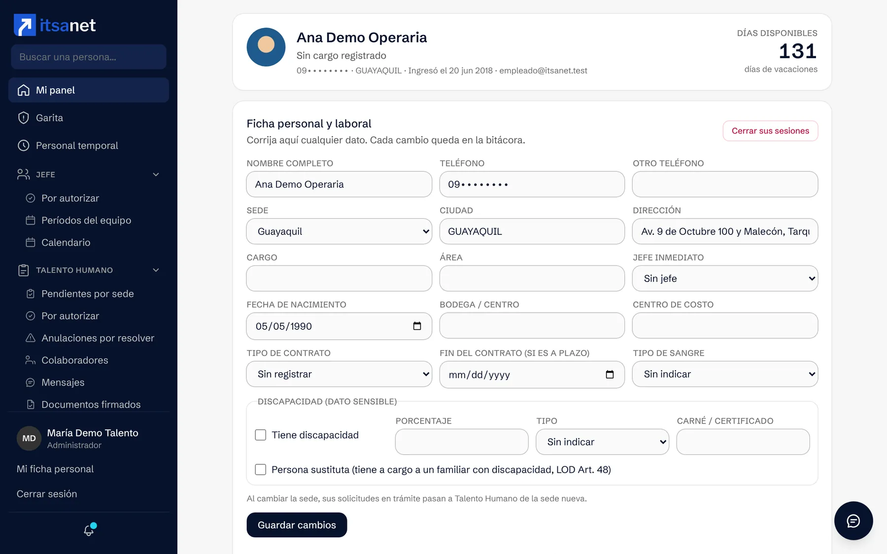
Tableros e informes
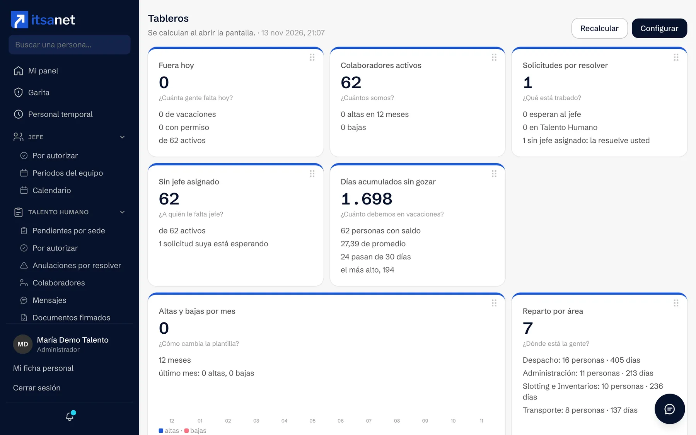
- Filtros del tablero (sede, área, fechas): se aplican a todas las tarjetas. Un clic en una barra filtra todo por ese valor.
- Arrastrar (⠿) para ordenar, ⤢ para cambiar el tamaño, ⛶ para ampliar.
- Configurar para crear sus propios gráficos (barras, columnas, línea, cifra) y compartirlos.
- Informes › Solicitudes: filtros combinables por estado, tipo, departamento, cargo, jefe, fechas.
Exportar datos
Un Excel, PDF o CSV con logo, folio y motivo. Queda registrado quién se llevó qué y para qué.
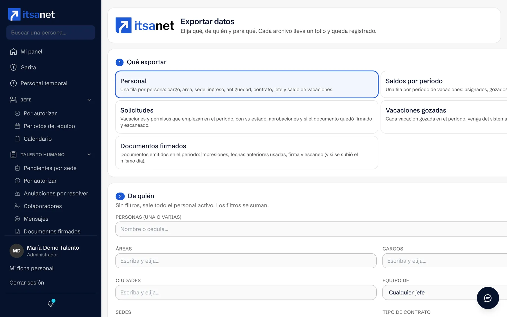
- Qué exportar: personal, saldos por período, solicitudes, vacaciones gozadas o documentos firmados.
- De quién: una o varias personas, áreas, cargos, ciudades, sede, tipo de contrato o el equipo de un jefe. Sin filtros sale todo el personal activo; los filtros se suman.
- Para qué: el motivo es obligatorio. Elija el formato y descargue.
EXP-AAAA-NNNN y la marca
«Confidencial».Cargos y áreas
La lista oficial de la que eligen los colaboradores al entrar.
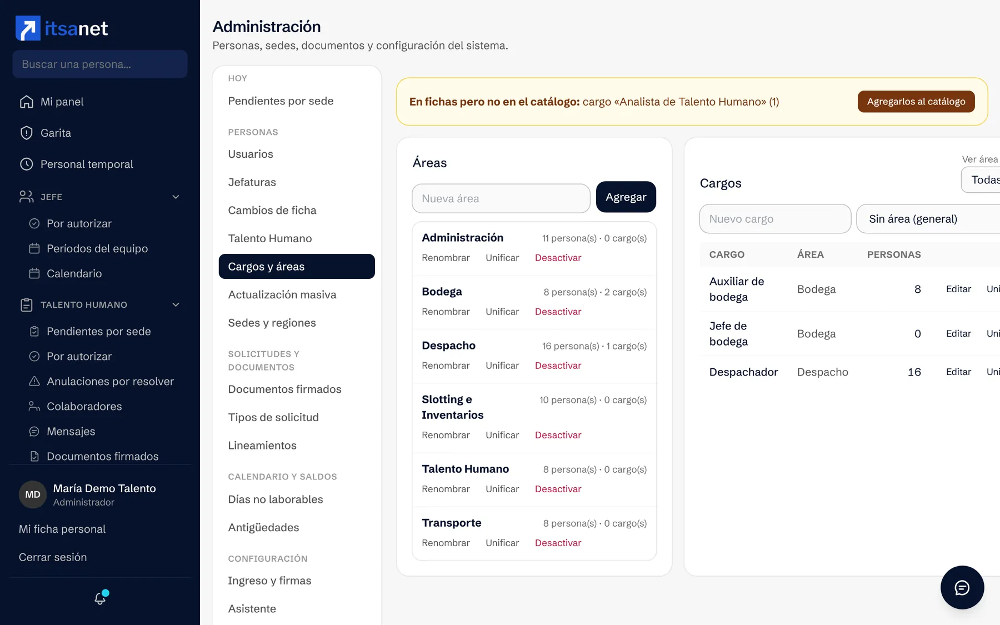
- Agregar un área o un cargo (el cargo, dentro de un área).
- Renombrar: cambia el nombre también en las fichas de todas las personas que lo tienen.
- Unificar: junta dos que son el mismo («BODEGA» y «Bodega Norte» → «Bodega»): las personas pasan al destino y queda un solo registro.
- Desactivar: lo quita de las listas para elegir, sin tocar a quien ya lo tiene.
- Si arriba aparece «En fichas pero no en el catálogo», pulse «Agregarlos al catálogo».
Actualización masiva por Excel
Cambiar cargo, área, jefe o sede de muchas personas a la vez, con vista previa.
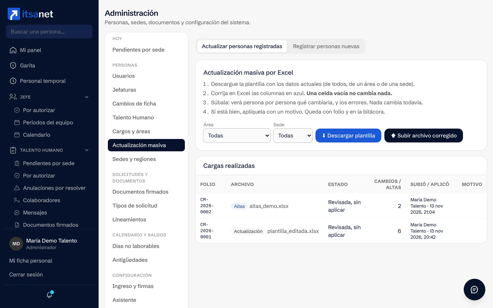
- Elija área o sede (o todas) y pulse «Descargar plantilla»: trae los datos actuales.
- Corrija en Excel las columnas en azul. Una celda vacía no cambia nada; no se borra nada desde aquí.
- Pulse «Subir archivo corregido». Verá persona por persona qué cambiaría (antes y después) y los errores. Todavía no cambia nada.
- Si está bien, escriba el motivo y pulse «Aplicar cambios». Queda con folio
CM-AAAA-NNNN. Si no, «Descartar».
Se pueden cambiar: cargo, área, cédula del jefe, ciudad de trabajo, bodega, centro de costo, cliente, tipo y fin de contrato. Cambiar la ciudad puede cambiar la sede de Talento Humano que atiende a la persona; sus trámites pendientes se mueven con ella.
Registrar personas nuevas (completar la planilla)
Para quienes faltan en el sistema. Puede subir la nómina completa: quien ya está se omite.
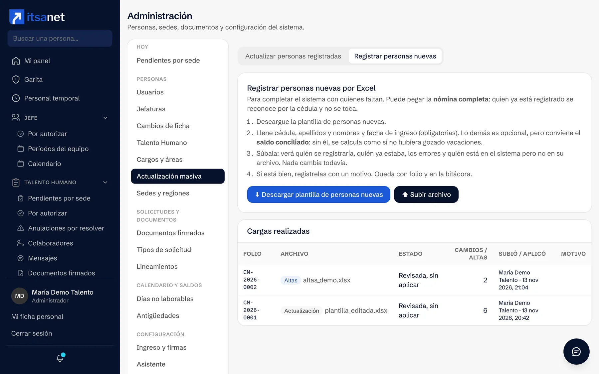
- Pulse «Descargar plantilla de personas nuevas».
- Pegue su nómina vigente. Obligatorio: cédula, apellidos y nombres, fecha de ingreso. Muy recomendado: días de vacaciones disponibles (el saldo conciliado a hoy) y correo personal. Opcional: celular, cargo, área, cédula del jefe, ciudad, bodega, centro de costo, cliente, contrato y fecha de nacimiento.
- Súbala. La revisión le dice:
- quiénes se registrarían, con el saldo que quedaría;
- cuántos ya estaban registrados (no se tocan);
- los errores por fila (cédula inválida, fecha futura, correo repetido, saldo mayor que lo devengado…);
- quién está en el sistema y no en su archivo: si subió la nómina completa, revíselos, pueden haber salido.
- Escriba el motivo y pulse «Registrar personas».
Validar salidas, regresos y visitas
Pensada para usarse de pie y rápido: el veredicto ocupa toda la pantalla.
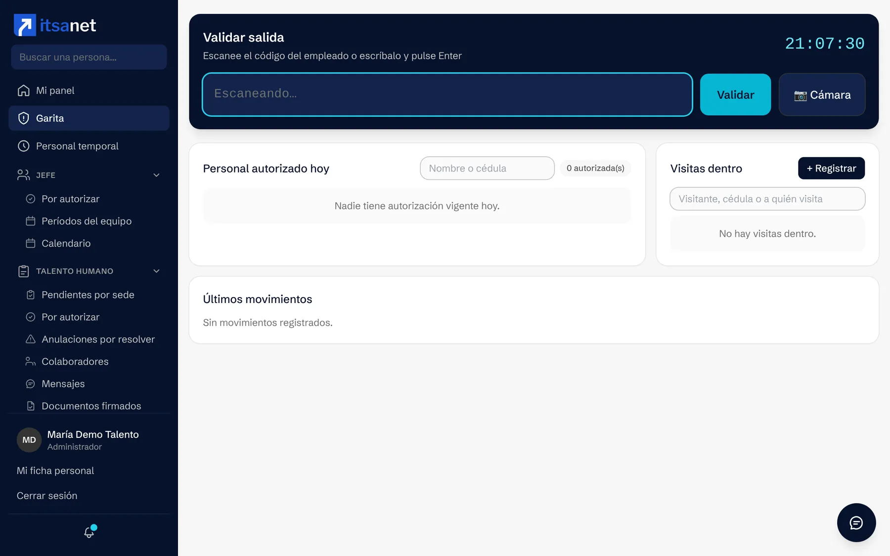
- Escanee el código QR del colaborador con el lector (o escríbalo y pulse Enter). También puede usar la cámara del equipo.
- La pantalla se pone verde si está autorizado o roja si no, con el motivo. Enter cierra el aviso y deja listo el siguiente.
- El mismo código leído por segunda vez registra el regreso, y si llegó tarde.
- Personal autorizado hoy: quién tiene permiso de salir hoy.
- Visitas: «Registrar» una visita al entrar; queda en «Visitas dentro» hasta que marque su salida.
- Últimos movimientos: lo registrado en la jornada.
Personal temporal
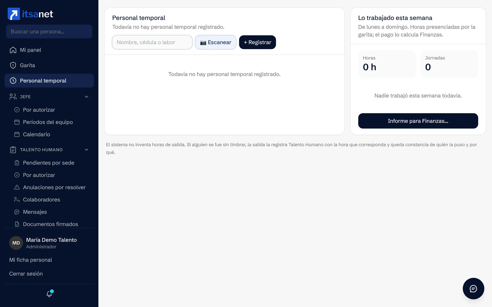
- Registrar: Talento Humano da de alta al operario temporal; con «Escanear» se lee la cédula con la cámara para no escribir los datos.
- Jornada: cada persona tiene un solo botón que cambia según corresponda: «Entró», «Salió» o «Listo».
- Lo trabajado esta semana e «Informe para Finanzas»: las horas y jornadas para el pago. Las jornadas que quedaron sin salida las cierra Talento Humano a mano, y queda en la bitácora.
Panel de administración
La configuración del sistema. Talento Humano ve casi todo; algunas opciones son solo del administrador.
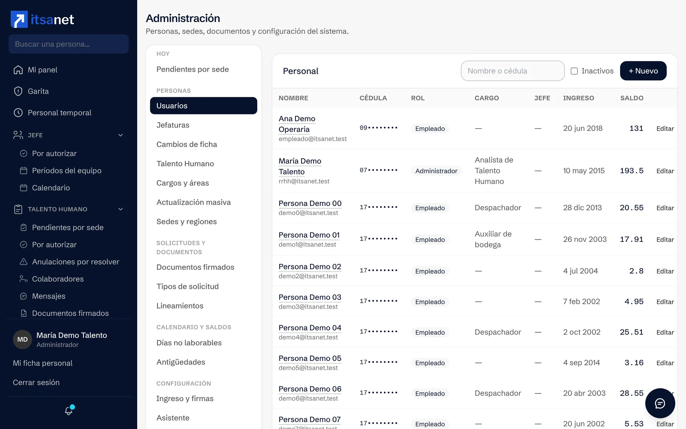
| Opción | Para qué sirve |
|---|---|
| Usuarios | Crear a una persona («+ Nuevo»), corregir su ficha, registrar su correo, cambiar su perfil, cerrar sus sesiones si perdió el celular y registrar su salida con la causa. |
| Jefaturas | Nombrar jefaturas y asignarles su equipo (por área, cargo o persona). |
| Cambios de ficha | Confirmar o rechazar lo que pidieron los colaboradores. |
| Talento Humano | Quién integra Talento Humano y qué sede atiende, y el correo del departamento que recibe copia de los avisos. |
| Cargos y áreas · Actualización masiva | Ver las secciones de Talento Humano. |
| Sedes y regiones | Las sedes de Talento Humano y qué ciudades atiende cada una. |
| Documentos firmados | Impresiones, firmas y escaneos. |
| Tipos de solicitud | Los tipos de permiso: si piden respaldo o justificación, si descuentan de vacaciones, sus topes de días y horas. |
| Lineamientos | Lo que se lee bajo «Antes de enviar, tenga presente» al pedir vacaciones o permisos. |
| Días no laborables | Feriados nacionales y locales del año. |
| Antigüedades | Cuántos días devenga cada persona según sus años de servicio (Art. 69 del Código del Trabajo). |
| Ingreso y firmas | Qué se pide en el primer ingreso y quién firma por Talento Humano en cada sede. |
| Asistente | Las respuestas propias de la empresa y lo que el asistente no supo responder. |
| Parámetros y base legal | Las reglas: anticipación, bloques, fines de semana, caducidad, feriados dentro de las vacaciones. Cada cambio queda en la bitácora. |
| Pantalla principal solo administrador | El aviso de la empresa y qué bloques ve el colaborador en su panel. |
| Actualizaciones solo administrador | Versión instalada, migraciones pendientes y las notas de cada entrega. |
| Bitácora | Registro inmutable de quién hizo qué y cuándo. No se puede editar ni borrar. |
| Cotejo de la carga · Depuración | Bajar lo que quedó en el sistema para compararlo con el archivo de origen (cédulas, ingresos, jefes y saldos), y encontrar lo que hay que corregir: por ejemplo, quién no puede entrar por falta de correo. |
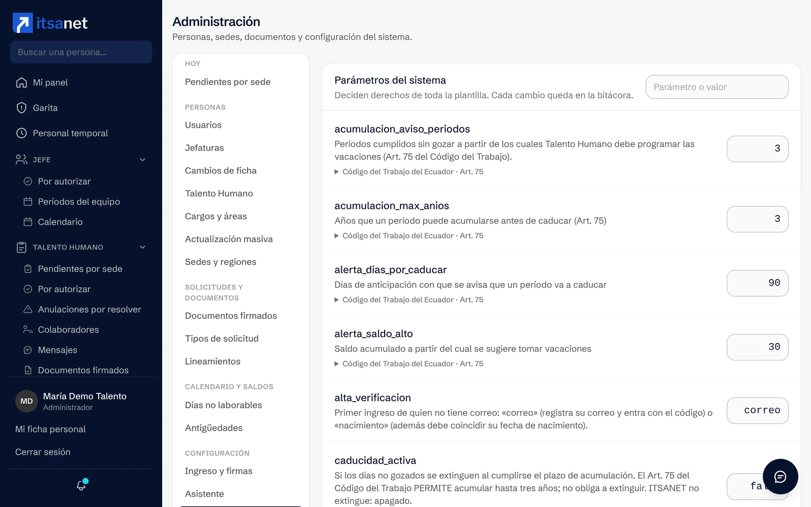
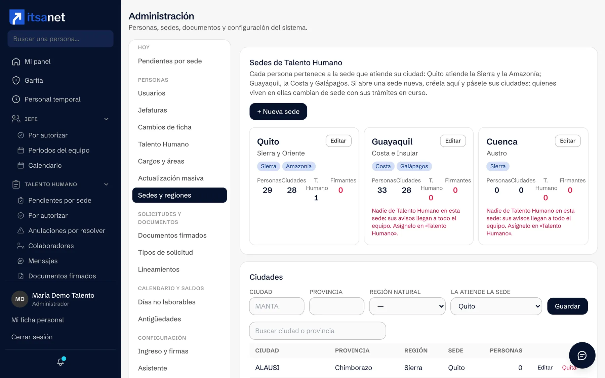
Cómo se cuentan los días
Cuántos días le corresponden
15 días por cada año completo de servicio. Desde el sexto año se suma un día por cada año adicional, hasta 15 adicionales (Código del Trabajo, Art. 69).
| Año de servicio | 1 a 5 | 6 | 7 | 10 | 20 o más |
|---|---|---|---|---|---|
| Días de ese año | 15 | 16 | 17 | 20 | 30 |
Los días del año en curso se van acumulando mes a mes (1,25 por mes). Tomarlos por adelantado lo autoriza Talento Humano.
Cómo se descuentan
- Vacaciones: días calendario. Todos los días entre la fecha de inicio y la de fin, incluidos sábados,
domingos y feriados:
fin − inicio + 1, igual que en la hoja de Talento Humano. - Permisos: días hábiles.
- Se descuenta primero del período más antiguo.
Ejemplos
- Del lunes 1 al domingo 14: 14 días.
- Del lunes al viernes: 5 días. El fin de semana siguiente no se descuenta porque vuelve a trabajar el lunes.
- En cada período deben caer al menos dos fines de semana completos (sábado y domingo) dentro de sus vacaciones.
Estados de una solicitud
| Estado | Qué significa | Qué puede hacer |
|---|---|---|
| Espera a su jefe | La revisa su jefe inmediato. | Cancelarla. |
| Espera a Talento Humano | El jefe la aprobó; falta la autorización final. | Cancelarla. |
| Aprobada | Autorizada. Si es un permiso, tiene su código de salida. | Firmar los documentos; pedir anulación si no la usará. |
| Anulación en trámite | Pidió anularla; Talento Humano decide. | Esperar la respuesta. |
| Rechazada | No se autorizó. El motivo está en la solicitud. | Hacer otra, corrigiendo lo indicado. |
| Cancelada | La canceló usted, o se anuló. | — |
Preguntas frecuentes
No me llega el código de acceso.
Revise spam y «Promociones», y espere un minuto. Si sigue sin llegar, su correo puede no estar registrado o estar mal escrito: pídale a Talento Humano que lo revise.
Cambié de celular o lo perdí.
Entre desde el nuevo: la sesión del anterior se cierra sola. Si lo perdió o se lo robaron, avise a Talento Humano para que cierre todas sus sesiones.
Mi cargo, mi área o mi jefe están mal.
Escríbale a Talento Humano por el chat. El jefe se puede pedir corregir desde «Mi ficha»; el cargo y el área los corrige Talento Humano.
¿Por qué me descontó también el sábado y el domingo?
Las vacaciones se cuentan en días calendario (Art. 69). Ver cómo se cuentan los días.
Necesito vacaciones con menos de 10 días de anticipación.
Hable con su jefe y con Talento Humano. La anticipación protege la organización del equipo; las excepciones se autorizan caso por caso.
Mi saldo no coincide con lo que yo tenía.
Abra «¿De dónde salen estos días?» en Mi panel para ver el detalle por año. Si algo no cuadra, escriba a Talento Humano por el chat con el año que no coincide.
¿Quién ve mis datos?
Usted y Talento Humano. Su jefe ve lo necesario para autorizar (fechas, días, saldo), no sus datos de contacto ni de salud.
Sus datos y su privacidad
Sus datos se tratan conforme a la Ley Orgánica de Protección de Datos Personales del Ecuador:
- Se usan solo para su relación laboral: vacaciones, permisos, control de salidas y contacto en emergencias.
- Los ven usted y Talento Humano. Su jefe, solo lo necesario para autorizar.
- La discapacidad y el tipo de sangre son datos sensibles: opcionales, y solo para lo que la ley prevé.
- El sistema funciona en servidores de la empresa. El asistente no envía sus datos a servicios externos.
- Cada acceso y cada cambio queda en una bitácora que no se puede borrar.
- Puede pedir a Talento Humano conocer, corregir o actualizar sus datos.